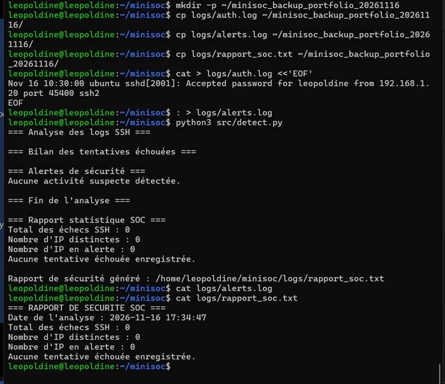

Surveillance des logs
Analyser les journaux d'authentification SSH pour détecter les échecs de connexion.
Développement d'un outil de détection d'activités suspectes à partir des journaux d'authentification SSH. Ce projet vise à reproduire une première approche de surveillance et d'analyse de sécurité inspirée du fonctionnement d'un SOC.
Le Mini-SOC est un projet personnel réalisé dans un environnement Ubuntu Server. Il consiste à développer un script Python capable d'analyser les logs SSH afin d'identifier les tentatives de connexion échouées et de repérer les comportements suspects.
Le système comptabilise les tentatives par adresse IP, compare les résultats à un seuil défini et génère des alertes ainsi qu'un rapport statistique de sécurité.
Analyser les journaux d'authentification SSH pour détecter les échecs de connexion.
Identifier les adresses IP dépassant un seuil de tentatives échouées.
Enregistrer automatiquement les alertes dans un fichier dédié.
Produire un rapport statistique regroupant les indicateurs clés de l'analyse.
Simulation d'une connexion SSH réussie sans échec d'authentification.
✓ Résultat : aucune alerte générée.
Simulation de cinq tentatives SSH échouées provenant de l'adresse IP 192.168.1.50.
✓ Résultat : une alerte SSH générée.
Simulation de tentatives échouées depuis trois adresses IP : deux dépassent le seuil de détection et une reste en dessous.
✓ Résultat : deux alertes générées pour 12 échecs SSH.
Les captures ci-dessous permettront de visualiser les étapes de réalisation et les résultats obtenus.


.png)
.png)
Analyse de journaux, détection d'activités suspectes et surveillance des authentifications SSH.
Manipulation de fichiers, expressions régulières, comptage et génération de rapports.
Utilisation d'Ubuntu Server, gestion de logs et exécution de scripts dans un environnement Linux.
Conception de scénarios de test et vérification des résultats attendus.
Retrouvez le code source du Mini-SOC sur GitHub.